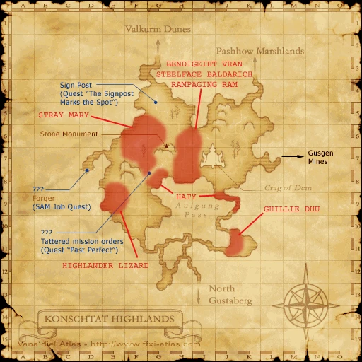
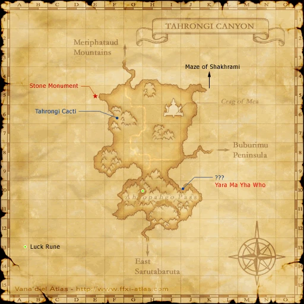
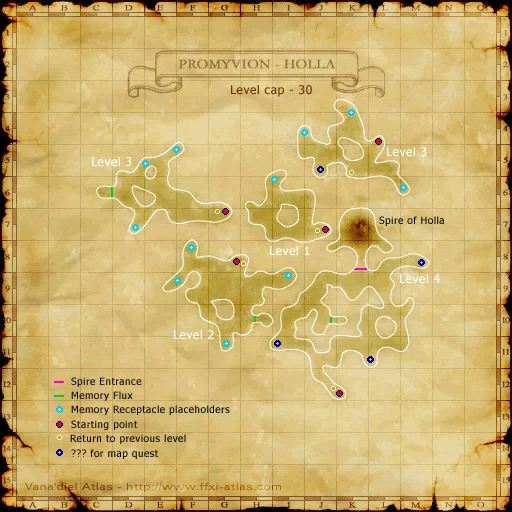
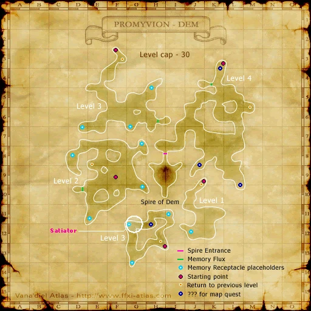
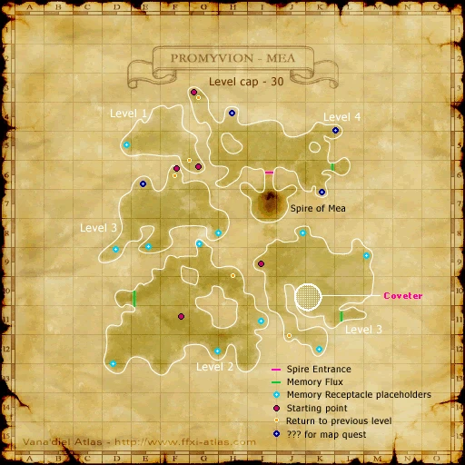

Before you begin
- Complete CoP 1-2.
- Collect all three lights by winning the three different Promyvion battlefields; the first light was obtained during 1-2.
Starting point
Shattered Telepoints · La Theine Plateau
Era note: Historical reference cap: 30. Native battlefields use the server MAX_LEVEL instead. The referenced native battlefield permits Trusts; optional era modules or Zenith overrides can change entry rules. This is code review, not a completed Zenith battlefield test.
Walkthrough
- Clear the two Promyvions whose lights you still lack. Use Holla/La Theine, Dem/Konschtat, and Mea/Tahrongi; the order is your choice.
- For each ascent, defeat Memory Receptacles until a working Memory Stream appears. Enter the streams to reach floor four, then the Spire.
- Win Ancient Flames Beckon at each Spire. Against Holla's Wreaker prepare Sleep/Curse recovery; against Dem's Progenerator control its offspring; against Mea's Delver prepare immediate healing after Impalement.
- After the third total victory and its scenes, you arrive in Lufaise Meadows. Continue west to Tavnazian Safehold for 2-1.
Battle and progress notes
- Empty enemies detect through Sneak and Invisible; avoid them rather than relying on those effects.
- Psychoanima and Hysteroanima can reduce boss pressure. Coordinate their use instead of spending several simultaneously.
Completion and reward
Light of Holla, Light of Dem and Light of Mea; Tavnazian Archipelago access.
What this opens
- Lufaise Meadows
- Tavnazian Safehold
- CoP 2-1
Area maps
Open a zone below, then select a map to enlarge it. Match the named floors and grid coordinates in the steps; these are reference area maps, not a live position tracker.
La Theine Plateau


Konschtat Highlands



Tahrongi Canyon



Promyvion - Holla



Promyvion - Dem



Promyvion - Mea



Lufaise Meadows


Tavnazian Safehold


Zone guides
- La Theine Plateau
- Konschtat Highlands
- Tahrongi Canyon
- Promyvion - Holla
- Promyvion - Dem
- Promyvion - Mea
- Spire of Holla
- Spire of Dem
- Spire of Mea
- Lufaise Meadows
- Tavnazian Safehold
References
- HorizonXI: CoP 1-3
- Reviewed mission implementation
- Reviewed mission implementation
- Reviewed mission implementation
- Reviewed mission implementation
Steps are an original summary of the linked walkthrough and reviewed source. Other servers’ bonus rewards are not included. How to read requirements, waits and battlefield notes.
Additional level-75 reference
|
Walkthrough
- Head to any of the Shattered Telepoints to enter Promyvion.
The Basics
- The level cap is 30.
- Experience will be earned here as if you are level 30. All deaths received carry a Level 30 penalty (350-400 after returning to your Home Point). The EXP penalty does not apply while inside the BCNM.
- Promyvions are entered from the Shattered Telepoints at the corresponding Crag. For example, if you wish to access Promyvion - Dem, head to the Shattered Telepoint at the Crag of Dem.
- Promyvion zones are keyed upon entry. For example, if you've gone into Dem you can skip the entry cutscenes by talking to the Cermet Door in Dem. But if you wish to enter another Promyvion before successfully completing Dem, then you need to have your memories sealed first. You may seal them either by using the Large Apparatus on your way out of Dem, or by accessing the Shattered Telepoint of the other crag you wish to enter.
Mob's behavior
Enemies in Promyvion are called "The Emptiness". Each Promyvion has 4 different kinds of mobs: Wanderers, Weepers, Seethers and a final mob that is exclusive to each Promyvion. The Seethers and exclusive mobs have a level range depending on floors like so:
- 1st: Easy Prey to Decent Challenge
- 2nd: Even Match to Tough
- 3rd: Very Tough to Incredibly Tough
- 4th: Incredibly Tough++
Weepers and Wanderers are always a little lower being Tough or Very Tough on the last floor.
Do not bother with Sneak or Invisible, all of the mobs are active on True Sight. It is possible, therefore, to walk behind them on the lower levels. The mobs on the higher levels are also active on True Sound. The best bet is to give them their right of way. All of the mobs will aggro, but none of the mobs will link when pulled.
Before you head out
Begin the Empty Memories quest in Ru'Lude Gardens from Harith. This is a repeatable quest, and he will ask you for Recollections, which are dropped from any mob in Promvyions, or may be purchased from the Auction House under Alchemy. Upon trading a recollection and 2,000 gil to Harith in Ru'Lude Gardens, you will receive Rare Animas that can be used on the Promvyion bosses. It is advisable that at least four people in your party, if not all six, have at least one Hysteroanima and one Psychoanima. The purpose of this is that the Animas will handicap the boss of each Promyvion for a limited amount of time, and make the fight easier.
For all of the Promyvions, it's recommended for everyone to bring along some form of Reraise, such as a Scroll of Instant Reraise or Reraise Earrings. Meleers may want to consider bringing along Hi-Potions, regen drinks, and maybe food. Attack or accuracy food is all right unless you're attempting Holla, where the boss may steal status effects, including food. Mages may want to consider bringing refresh drinks, Ethers, Echo Drops, and MP food.
Additionally, if you are attempting the boss in Dem, you may want to bring Antidotes. If you are attempting the boss in Holla, you should bring Poison Potions and maybe Holy Water as well.
Walkthrough for all Promvyions
Upon entering the Promvyion, all buffs except food will cancel. It is recommended you use the maps from The Vana'diel Atlas (on the right). It shows the locations of all the Memory Receptacles and tele-points.
To go up a floor, you must find and defeat a Memory Receptacle. Have someone with Wide Scan track the Memory Receptacle. MRs always appear on platforms and the platform locations are fixed. Although there are several possible locations on the second and third floors, the MR may not be at all the locations. The MR will pop several Strays. If the MR is real, a Memory Stream will pop, and you have three minutes to enter this stream and go into the next level. If the MR is fake, nothing will pop up. Be sure to kill all the Strays before entering the portal because if you attempt to use it while being attacked, you will get an error message.
If you need to go down a level, search for a platform that has a live portal, but no MR sitting on it. That will be the portal down. Try not to get separated from your group!
If you have not done so already, be sure to use your reraise item upon reaching the third floor. Although the previous floors may have been easier, things can get extremely difficult from here on out. On the fourth floor, there is no MR. You will have to look for the zoneline. It may be very difficult to avoid aggro on the fourth floor, but if you get caught and the castle-like structure is nearby, you should be able to zone easily. You will zone into the Spire, and your level restriction will be lifted. However, just rest up because the level restriction will go back in effect upon entering the BCNM.
It is advised that before entering the BCNM, you set an order of use for animas. They last 30 seconds and do overlap (in that by using one during the effect of another of the same type the timer of effect will reset to 30 seconds), but panicking and using three at once is clearly not necessary.
The NM boss fight
Boss fights are single-party only. If you went up with a partial alliance someone is going to sit out during the fight. The fight you want is "Ancient Flames Beckon."
Do not rush up to the boss, as all buffs except your food will cancel upon entering the battlefield. Instead use a Reraise item, food, drinks, and cast your buffs first.
Anima have the same effect on all three bosses:
- Psychoanima causes the boss to be 100% intimidated by players for ~30 seconds, stopping all normal attacks (prevents 7-8 attacks).
- Hysteroanima causes the boss's special attacks to fail for ~20 seconds. They are still readied, but do not execute. This is especially useful in the last 20% of the boss' HP, when they start to spam their TP attacks.
- Terroanima causes the boss to run away from the player with hate for ~30 seconds.
The effects of anima stack, so you can use Psychoanima and Hysteroanima in pairs to stop all attacks. This also helps you to time the Hysteroanima.
Promyvion - Holla
- Trinary Tap: Drains 1-3 status effects (including Food, Reraise and Utsusemi) or 200 HP from the target.
- Trinary Absorption: Drains HP from the target.
- Shadow Spread: AoE Curse and Sleep. Use Poison Potions to prevent sleep and Holy Water to remove Curse.
- Stygian Vapor: AoE Plague + hate reset?
- Negative Whirl: AoE Ice? damage.
- Winds of Promyvion: Erases one negative effect on the NM.
- Empty Cutter: Single target physical damage.
The tank should eat Nashmau Stew due to its potent debuffing effects; these effects will be transferred to the boss when it does Trinary Tap. Other than this, the tank should not have any positive buffs. However, be sure to give the tank a useless buff like Barstonra for the boss to absorb instead of the tank's HP. If you have a Bard in your party, they can give the tank songs that won't cause too much trouble when absorbed, like Ballad.
Promyvion - Dem
- For Dem, the boss is the Progenerator (Gorger type). His TP attacks are:
- At 50% HP he will start popping kids but he can pop them also if he has still 90-95% HP left. The Offsprings are smaller than normal Gorgers and are weak. The Progenerator is immune to Sleep and Bind, the Offspring are not. The maximum number of Offspring in play is 6. Offspring will continue to be generated if some are killed off.
Promyvion - Mea
- Carousel: AoE physical damage and knockback. Absorbed by Utsusemi.
- Promyvion Brume: AoE damage + Poison (+ hate reset?)
- Murk: AoE Slow + Gravity.
- Impalement: Drops the target to 5% HP and resets hate on them, like Throat Stab. Can avoid by running away.
- Empty Thrash: Single target damage.
- Material Fend: Evasion boost.
- Carousel is a bothersome attack as healing your damage dealers often requires Curaga, which can shift hate in unpleasant ways. Promyvion Brume will reset hate and is an AoE poison effect. Utsusemi can't block the AoE Poison effect from Promyvion Brume. This is an incredibly nasty skill to face.
- Make sure you bring Antidote potions to self-cure poison; your healer will not have time to give Poisona to people. The hate-reset also makes doing so a dangerous proposition. This boss is incredibly hard to fight if it's allowed to spam its skills.
Notes
While it is completely possible to get the experience point bonus from each of the 3 Promyvions in one day, There is a cool down period before you can receive the bonus for the same Promyvion. This cooldown period is likely a 24 hour period.
Guides
Game Description
- Mission Orders
- The first mothercrystal has been tainted with Emptiness. Hurry to the remaining crags to find out if any other stones have met the same fate.
Adapted from Eden Wiki: The Mothercrystals · Contributors and history · CC BY-SA 4.0. Revision 8996. Layout, links and optional background text adapted for Zenith.